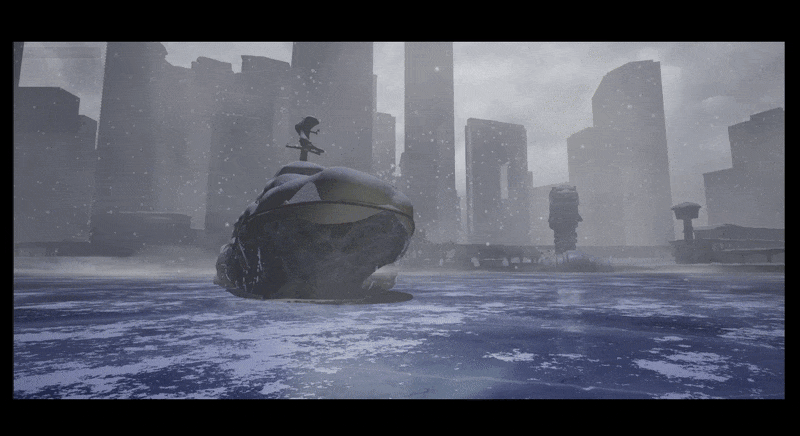
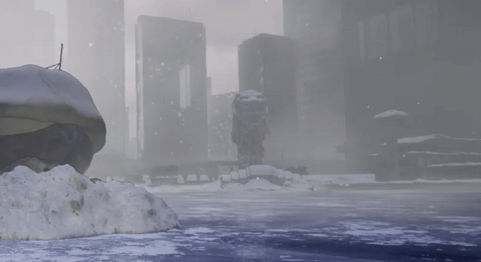

Building procedural winter systems for a frozen Singapore
The Arctic Epoch is a 14-week group project set in a post-apocalyptic Singapore after a global snowstorm. This case study focuses on my snow and icicle generators, ice shader troubleshooting, and snowflake research.
I developed the piled snow system in Unreal Engine 5 Blueprint and the ice and icicle generator in Houdini. I also resolved rendering issues in a teammate's ice shader. The environment shown here is a collaborative team result.
Piled Snow Generator
Create snow with visible thickness that conforms to different objects, with controls for coverage and a windswept appearance.
Controlling the snow
The Blueprint tool exposes snow coverage, sparse rate, sphere size, texture, displacement scale and strength, and mesh caching. These controls let me adapt the generated snow to different assets.
Problem — generating snow on large assets
Large or high-poly models made generation too heavy. Changes to an object's transform or scale also required caching the mesh and generating the snow again.
Solution — generate small, then bake
I generated snow on objects scaled down to 0.02 to reduce the generation burden, then baked the output as a static mesh for use in the environment.

Blending snow into the surface
Alongside the piled geometry, I created a snow texture blend material that could be incorporated into an object's parent material. Blend bias controls the snow amount, while blend sharpness controls the transition.
Ice & Icicle Generator
I built a generator that grows ice and icicles in response to an input mesh. Controls include seed birth rate, growth speed and length, thickness, shape, and ice coverage.


From simulation to environment asset
The tool supports animated growth, but the project used the final simulation frame as its output. The Merlion combines this icicle output with accumulated snow.
Ice Shader — Rendering & Flickering
A teammate created the original ice shader. My contribution was to investigate and resolve the transparency and flickering issues that appeared when it was used in the snowstorm environment.
Problem — transparency during the snowstorm
The shader used the scene behind the ice to create a translucent appearance. With the snowstorm's 2D sprites behind it, the ice appeared fully transparent instead of retaining its volume.

Problem — distant objects flickering
The ice also showed flickering on distant objects, including the Merlion.

Solution — opaque material with apparent depth
I switched the shader to opaque and offset its UV coordinates using the camera vector to preserve a volumetric ice appearance. This avoided relying on the scene behind the ice for its translucent look.
.gif)
Snowflake Generator
Exploratory work — not used in the final playable demo.
I developed a parametric snowflake generator for a planned cinematic introduction, referencing Clifford A. Reiter's A local cellular model for snow crystal growth. Alpha, Beta, and Gamma controls let me explore different growth patterns.


When the team changed the deliverable from a cinematic to a playable demo, the snowflake introduction was no longer needed. It remains part of the project's research and development.
Team & Contributions
Christine Jung — Shader Technical Artist
Robin Zheng — Technical Artist, Look-Dev Artist
Caiyu Zhang — Technical Environment Artist
Yuxuan Wu — Environment Artist, Technical Artist
Laura Yang — Technical Artist, Look-Dev Artist
This case study focuses on my technical art contributions. Environment imagery shows the collaborative project.